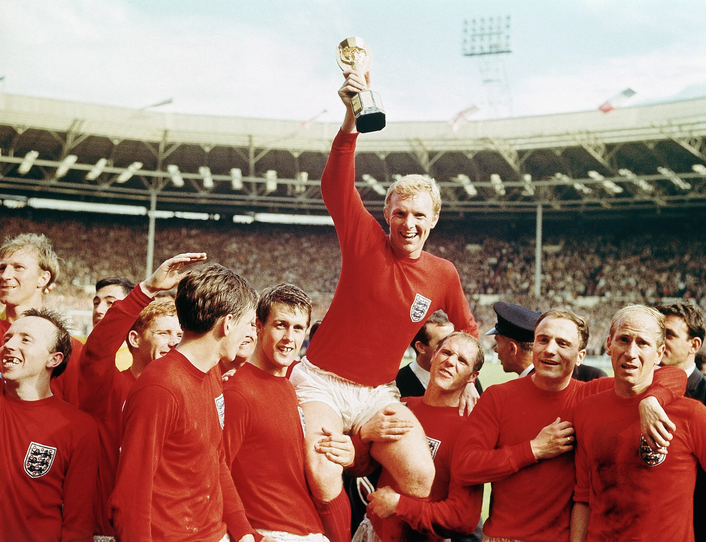

Seleção Brasileira na Copa de 1962 no Chile comemorando o segundo título mundial do Brasil
Nos anos 60 tivemos a volta da Copa do Mundo a América do Sul com sua edição de 1962 no Chile. Além dela, tivemos a de 1966 na Inglaterra.
Ao fim das duas, o Brasil se sagrou bi-campeão do mundo vencendo a Tchecoslováquia em 1962 e os donos da casa em 66, a Inglaterra, venceu a sua primeira e única Copa do Mundo!
Chile 1962
Copa do Mundo de 1962 sediada no Chile
A edição de 1962 da Copa do Mundo marcou a sétima participação da Seleção Brasileira de Futebol nessa competição. Era o único país a participar de todas as edições do torneio da FIFA, fato que persistirá pelo menos a edição realizada no Catar em 2022. Foi a primeira em que o Brasil defendia o título de campeão, após a conquista do Mundial da Suécia, em 1958.
Seleção Brasileira em 1962
Garrincha foi eleito o melhor jogador da competição. Após uma primeira fase fraca, com apenas uma assistência contra a Espanha e nenhum gol, Garrincha assumiu o protagonismo na fase final, terminando a competição como artilheiro, ao lado de Vavá, com 4 gols, e ainda deu duas assistências.
A campanha brasileira também foi marcada pela lesão de Pelé, na segunda partida da primeira fase contra a Tchecoslováquia. O rei foi substituído por Amarildo, que em surpreendente desempenho terminou como vice-artilheiro do torneio.
Inglaterra 1966
Copa do Mundo de 1966 sediada na Inglaterra
Na busca pelo tricampeonato, a Seleção Brasileira apresentou desorganização, chegando a convocar mais de 40 jogadores antes da realização dos cortes num processo marcado por politicagens. Porém, havia no país a sensação de confiança de que o Brasil ficaria com o título. A Seleção, no entanto, acabou eliminada ainda na primeira fase, após vencer a frágil Bulgária por 2–0 com gols de bola parada de Pelé e Garrincha, e perder para Hungria e Portugal (ambas as derrotas foram por 3–1). O jogo contra Portugal foi marcado pelas jogadas violentas contra Pelé que acabou se machucando, com "destaque" para as duas entradas violentíssimas do português Morais, que tirou Pelé de campo, mas não foi expulso nem advertido pelo árbitro inglês, George McCabe.

A Inglaterra foi a campeã da Copa de 66
O Brasil estava irreconhecível: em nenhum momento o time jogou bem. Ficaram evidentes a falta de comando e a ausência de um esquema de jogo, com Pelé caçado em campo e Garrincha decadente. Devido às faltas duras dos búlgaros, Pelé não jogou contra a Hungria. Contra Portugal, Garrincha ficou na reserva. O jogo contra a Bulgária foi, portanto, a última partida em que Pelé e Garrincha atuaram juntos pela Seleção (com a dupla em campo, o Brasil nunca perdeu).
Seleção Brasileira em 1966
Logo após a eliminação brasileira perante Portugal, o então presidente da CBD João Havelange acusou os árbitros ingleses de deliberadamente prejudicarem o Brasil, por não terem coibido a violência dos adversários do Brasil, ressaltando que entre os 9 árbitros (3 árbitros e 6 auxiliares/"bandeirinhas") dos jogos do Brasil, 7 eram britânicos, adicionando também que o Brasil teve nada menos que 5 jogadores contundidos em apenas 3 partidas. Mesmo na partida do Brasil que terminou com vitória brasileira, o Brasil 2 X 0 Bulgária, houve reclamações da Delegação Brasileira, quanto à violência dos adversários, não coibida pelo árbitro da partida, o alemão-ocidental Kurt Tschenscher. Na verdade, Havelange já fazia essas denúncias ainda antes da eliminação do Brasil; já após a vitória brasileira sobre a Bulgária, o primeiro jogo do Brasil na Copa, Havelange denunciou pela primeira vez o que considerou "recursos mesquinhos" de uma "trama inglesa". Em uma entrevista ao jornal Folha de S. Paulo 42 anos depois, em 26/06/2008, Havelange reafirmou suas acusações, dizendo que a Copa de 1966 foi desde o início "armada" pelo então presidente da FIFA Stanley Rous (inglês) para ser vencida pela Inglaterra. Na segunda fase da Copa, a polêmica arbitragem na partida em que a Alemanha Ocidental eliminou o Uruguai, partida apitada por um árbitro inglês, e a também polêmica arbitragem na partida em que a Inglaterra eliminou a Argentina, partida apitada por um árbitro alemão-ocidental, levaram ao surgimento da hipótese de que a Copa de 1966 teria sido "armada" para prejudicar os sul-americanos e beneficiar os europeus (em particular a Inglaterra), teoria que tem como defensores João Havelange e o técnico e ex-jogador uruguaio Óscar Tabárez. A imprensa, já na época, registrou a forma como a Inglaterra parecia mesmo estar sendo ajudada na Copa: após a vitória de 2–1 da Inglaterra sobre Portugal na nas semi-finais da Copa, o Jornal do Brasil registrou que aquela havia sido a única partida da Inglaterra em que o árbitro foi integralmente imparcial.